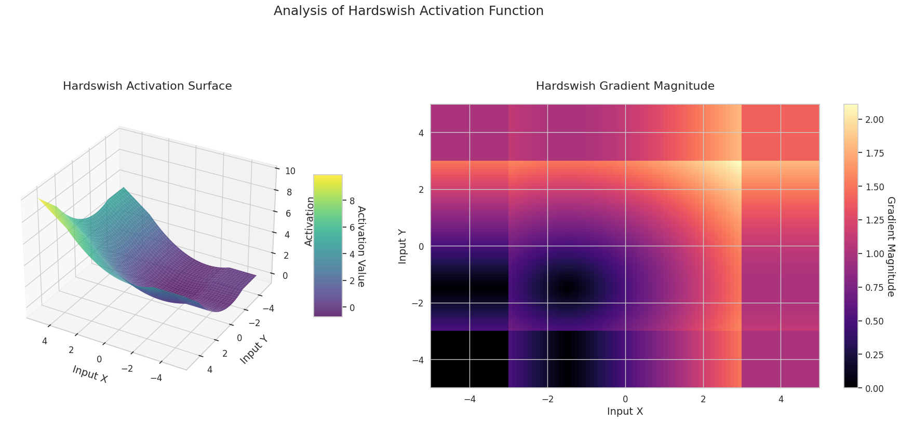
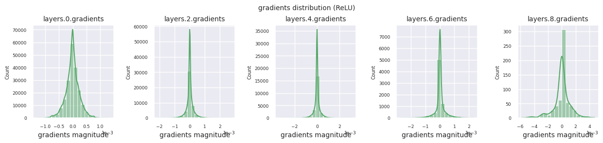
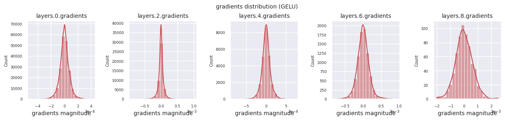
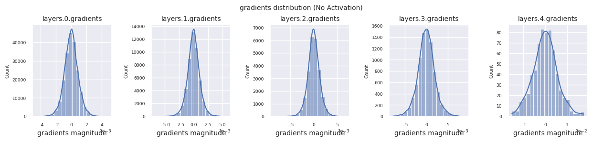
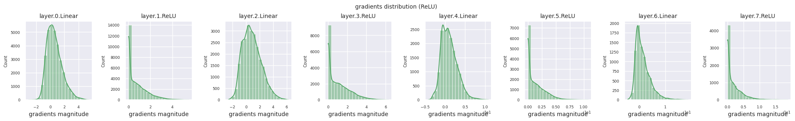

Code
!pip install dldna[colab] # in Colab
# !pip install dldna[all] # in your local
%load_ext autoreload
%autoreload 2 
“만약 당신이 무엇을 하고 있는지 정확히 안다면, 그것은 연구가 아니다.” - 알버트 아인슈타인
딥러닝의 역사에서 활성화 함수와 최적화 기법은 매우 중요한 발전을 이루어 왔습니다. 1943년 McCulloch-Pitts의 인공 뉴런 모델이 처음 등장했을 때는 단순한 임계값 함수(계단 함수)만을 사용했습니다. 이는 뉴런이 특정 임계값을 넘어서는 입력에 대해서만 활성화되는 생물학적 뉴런의 동작 방식을 모방한 것이었습니다. 하지만 이러한 단순한 형태의 활성화 함수는 신경망이 복잡한 함수를 표현하는 데 한계가 있었습니다.
1980년대까지 머신러닝은 특성 공학(feature engineering)과 정교한 알고리즘 설계에 중점을 두었습니다. 신경망은 여러 머신러닝 알고리즘 중 하나에 불과했으며, SVM(Support Vector Machine)이나 Random Forest와 같은 전통적인 알고리즘들이 더 우수한 성능을 보이는 경우가 많았습니다. 예를 들어, MNIST 손글씨 인식 문제에서 SVM은 2012년까지 최고의 정확도를 유지했습니다.
2012년 AlexNet는 GPU를 활용한 효율적인 학습으로 ImageNet 챌린지에서 압도적인 성능을 달성했고, 이는 딥러닝 시대의 본격적인 시작을 알렸습니다. 2017년 구글의 트랜스포머(Transformer) 아키텍처는 이러한 혁신을 더욱 발전시켰으며, 오늘날 GPT-4, Gemini와 같은 대규모 언어 모델(LLM)의 기반이 되었습니다.
이러한 발전의 중심에는 활성화 함수의 진화와 최적화 기법의 발전이 있었습니다. 이번 장에서는 활성화 함수에 대해 자세히 살펴보면서, 여러분이 새로운 모델을 개발하고 복잡한 문제를 해결하는 데 필요한 이론적 기반을 제공하고자 합니다.
연구자의 고뇌: 초기 신경망 연구자들은 선형 변환만으로는 복잡한 문제를 해결할 수 없다는 것을 깨달았습니다. 하지만 어떤 비선형 함수를 사용해야 신경망이 효과적으로 학습하고, 다양한 문제를 해결할 수 있을지는 명확하지 않았습니다. 생물학적 뉴런의 동작을 모방하는 것이 최선의 방법일까? 아니면 더 나은 수학적, 계산적 특성을 가진 다른 함수가 있을까요?
활성화 함수는 신경망 층 사이에 비선형성을 부여하는 핵심 요소입니다. 1.4.1절에서 언급한 보편 근사 정리(Universal Approximation Theorem) (1988년)는 하나의 은닉층과 비선형 활성화 함수를 가진 신경망이 어떠한 연속 함수도 근사할 수 있다는 것을 증명했습니다. 즉, 활성화 함수는 층을 분리하고 비선형성을 부여함으로써, 신경망이 단순한 선형 모델의 한계를 넘어 범용적인 함수 근사기(universal function approximator)로 동작할 수 있게 합니다.
활성화 함수가 없다면, 아무리 많은 층을 쌓아도 신경망은 결국 선형 변환에 불과하게 됩니다. 이는 다음과 같이 간단하게 증명할 수 있습니다.
두 개의 선형 변환을 연속으로 적용하는 경우를 생각해 봅시다.
여기서 \(x\)는 입력, \(W_1\), \(W_2\)는 가중치 행렬, \(b_1\), \(b_2\)는 편향 벡터입니다. 두 번째 층의 식에 첫 번째 층의 식을 대입하면:
\(y_2 = W_2(W_1x + b_1) + b_2 = (W_2W_1)x + (W_2b_1 + b_2)\)
새로운 가중치 행렬 \(W' = W_2W_1\)과 새로운 편향 벡터 \(b' = W_2b_1 + b_2\)를 정의하면,
\(y_2 = W'x + b'\)
이는 결국 하나의 선형 변환과 동일합니다. 아무리 많은 층을 쌓아도 마찬가지입니다. 결국, 선형 변환만으로는 복잡한 비선형 관계를 표현할 수 없습니다.
1943년, McCulloch-Pitts 뉴런: 최초의 인공 뉴런 모델에서는 단순한 임계값 함수(threshold function), 즉 계단 함수(step function)를 사용했습니다. 이는 뉴런이 특정 임계값을 넘어서는 입력에 대해서만 활성화되는 생물학적 뉴런의 동작 방식을 모방한 것이었습니다.
\[ f(x) = \begin{cases} 1, & \text{if } x \ge \theta \\ 0, & \text{if } x < \theta \end{cases} \]
여기서 \(\theta\)는 임계값입니다.
1960년대, 시그모이드(Sigmoid) 함수: 생물학적 뉴런의 발화율(firing rate)을 더 부드럽게 모델링하기 위해 시그모이드 함수가 도입되었습니다. 시그모이드 함수는 S자 모양의 곡선으로, 입력값을 0과 1 사이의 값으로 압축합니다.
\[ \sigma(x) = \frac{1}{1 + e^{-x}} \]
시그모이드 함수는 미분 가능하다는 장점이 있어, 경사 하강법(gradient descent) 기반의 학습 알고리즘을 적용할 수 있게 했습니다. 하지만, 시그모이드 함수는 심층 신경망에서 그래디언트 소실 문제(vanishing gradient problem)를 일으키는 원인 중 하나로 지목되었습니다. 입력값이 매우 크거나 작을 때, 시그모이드 함수의 기울기(미분값)가 0에 가까워져, 학습이 느려지거나 멈추는 현상입니다.
2010년, ReLU(Rectified Linear Unit): Nair와 Hinton은 ReLU 함수를 제안하여 심층 신경망 학습의 새로운 시대를 열었습니다. ReLU는 매우 단순한 형태를 가집니다.
\[ ReLU(x) = \max(0, x) \]
ReLU는 입력이 0보다 크면 입력을 그대로 출력하고, 0보다 작으면 0을 출력합니다. ReLU는 시그모이드 함수와 달리 그래디언트 소실 문제가 덜 발생하고, 계산 효율성이 높다는 장점이 있습니다. 이러한 장점 덕분에 ReLU는 심층 신경망의 성공에 크게 기여했으며, 현재 가장 널리 사용되는 활성화 함수 중 하나입니다.
활성화 함수의 선택은 모델의 성능과 효율성에 큰 영향을 미칩니다.
대규모 언어 모델(LLM): 계산 효율성이 매우 중요하기 때문에, 단순한 활성화 함수를 선호하는 경향이 있습니다. Llama 3, GPT-4, Gemini 등 최신 기반 모델들은 GELU(Gaussian Error Linear Unit)나 ReLU와 같이 단순하고 효율적인 활성화 함수를 채택하고 있습니다. 특히 Gemini 1.5는 MoE(Mixture of Experts) 아키텍처를 도입하여 각 전문가 네트워크(expert network)별로 최적화된 활성화 함수를 사용합니다.
특수 목적 모델: 특정 태스크에 최적화된 모델을 개발할 때는 더 정교한 접근 방식이 시도되기도 합니다. 예를 들어, TEAL과 같은 최신 연구에서는 활성화 희소성(activation sparsity)을 통해 추론 속도를 최대 1.8배까지 향상시키는 방법이 제안되었습니다. 또한, 입력 데이터에 따라 동적으로 동작을 조정하는 적응형 활성화 함수(adaptive activation functions)를 사용하는 연구도 진행되고 있습니다.
활성화 함수의 선택은 모델의 규모, 태스크의 특성, 가용한 계산 자원, 그리고 요구되는 성능 특성(정확도, 속도, 메모리 사용량 등)을 종합적으로 고려하여 이루어져야 합니다.
도전과제: 수많은 활성화 함수 중에서 어떤 함수가 특정 문제와 아키텍처에 가장 적합할까?
연구자의 고뇌: 2025년 현재 500여 개의 활성화 함수가 제안되었지만, 모든 상황에 완벽한 활성화 함수는 존재하지 않습니다. 연구자들은 각 함수의 특성을 이해하고, 문제의 특성과 모델 아키텍처, 계산 자원 등을 고려하여 최적의 활성화 함수를 선택하거나, 심지어 새로운 활성화 함수를 개발해야 했습니다.
활성화 함수에 일반적으로 요구되는 성질은 다음과 같습니다. 1. 신경망에 비선형 곡률을 추가해야 합니다 2. 훈련이 어려워질 정도로 계산의 복잡성을 증가시키지 않아야 합니다 3. 그래디언트의 흐름을 방해하지 않도록 미분 가능해야 합니다 4. 훈련시 신경망 각 층에서 데이터의 분포가 적절해야 합니다
이러한 요구사항에 적합하면서 효율적인 활성화 함수가 많이 제안되었습니다. 어떤 활성화 함수가 가장 좋은가는 한마디로 말할 수 없습니다. 훈련하는 모델과 데이터 등에 따라 달라지기 때문입니다. 최적의 활성화 함수를 찾는 방법은 실제 테스트를 해보는 것입니다.
2025년 현재 활성화 함수는 크게 세 가지 범주로 분류됩니다. 1. 고전적 활성화 함수: Sigmoid, Tanh, ReLU 등 고정된 형태의 함수입니다. 2. 적응형 활성화 함수: PReLU, TeLU, STAF 등 학습 과정에서 형태가 조정되는 매개변수를 포함합니다. 3. 특화된 활성화 함수: ENN(Expressive Neural Network), Physics-informed 활성화 함수 등 특정 도메인에 최적화된 함수입니다.
이 장에서 여러 활성화 함수를 비교합니다. 대부분 파이토치에 구현된 것을 중심으로 할 것이지만 Swish, STAF 같이 구현이 안된 것은 nn.Module을 상속받아 새로 만듭니다. 전체 구현은 chapter_04/models/activations.py에 있습니다.
!pip install dldna[colab] # in Colab
# !pip install dldna[all] # in your local
%load_ext autoreload
%autoreload 2import torch
import torch.nn as nn
import numpy as np
# Set seed
np.random.seed(7)
torch.manual_seed(7)
# STAF (Sinusoidal Trainable Activation Function)
class STAF(nn.Module):
def __init__(self, tau=25):
super().__init__()
self.tau = tau
self.C = nn.Parameter(torch.randn(tau))
self.Omega = nn.Parameter(torch.randn(tau))
self.Phi = nn.Parameter(torch.randn(tau))
def forward(self, x):
result = torch.zeros_like(x)
for i in range(self.tau):
result += self.C[i] * torch.sin(self.Omega[i] * x + self.Phi[i])
return result
# TeLU (Trainable exponential Linear Unit)
class TeLU(nn.Module):
def __init__(self, alpha=1.0):
super().__init__()
self.alpha = nn.Parameter(torch.tensor(alpha))
def forward(self, x):
return torch.where(x > 0, x, self.alpha * (torch.exp(x) - 1))
# Swish (Custom Implementation)
class Swish(nn.Module):
def forward(self, x):
return x * torch.sigmoid(x)
# Activation function dictionary
act_functions = {
# Classic activation functions
"Sigmoid": nn.Sigmoid, # Binary classification output layer
"Tanh": nn.Tanh, # RNN/LSTM
# Modern basic activation functions
"ReLU": nn.ReLU, # CNN default
"GELU": nn.GELU, # Transformer standard
"Mish": nn.Mish, # Performance/stability balance
# ReLU variants
"LeakyReLU": nn.LeakyReLU,# Handles negative inputs
"SiLU": nn.SiLU, # Efficient sigmoid
"Hardswish": nn.Hardswish,# Mobile optimized
"Swish": Swish, # Custom implementation
# Adaptive/trainable activation functions
"PReLU": nn.PReLU, # Trainable slope
"RReLU": nn.RReLU, # Randomized slope
"TeLU": TeLU, # Trainable exponential
"STAF": STAF # Fourier-based
}STAF는 2025년 ICLR에서 소개된 최신 활성화 함수로 푸리에 급수 기반의 학습 가능한 매개변수를 사용합니다. ENN은 DCT를 활용하여 네트워크의 표현력을 향상시키는 방식을 채택했습니다. TeLU는 ELU의 확장된 형태로 alpha 매개변수를 학습 가능하게 만든 버전입니다.
활성화 함수와 그래디언트를 시각화하여 특성을 비교합니다. PyTorch의 자동미분 기능을 활용하면 backward() 호출로 간단히 그래디언트를 계산할 수 있습니다. 다음은 활성화 함수의 특성을 시각적으로 분석하는 예제입니다. 그래디언트 흐름의 계산은 주어진 활성화 함수에 일정한 범위의 입력값을 통해서 계산합니다. compute_gradient_flow가 그 역할을 하는 메쏘드입니다.
def compute_gradient_flow(activation, x_range=(-5, 5), y_range=(-5, 5), points=100):
"""
Computes the 3D gradient flow.
Calculates the output surface of the activation function for two-dimensional
inputs and the magnitude of the gradient with respect to those inputs.
Args:
activation: Activation function (nn.Module or function).
x_range (tuple): Range for the x-axis (default: (-5, 5)).
y_range (tuple): Range for the y-axis (default: (-5, 5)).
points (int): Number of points to use for each axis (default: 100).
Returns:
X, Y (ndarray): Meshgrid coordinates.
Z (ndarray): Activation function output values.
grad_magnitude (ndarray): Gradient magnitude at each point.
"""
x = np.linspace(x_range[0], x_range[1], points)
y = np.linspace(y_range[0], y_range[1], points)
X, Y = np.meshgrid(x, y)
# Stack the two dimensions to create a 2D input tensor (first row: X, second row: Y)
input_tensor = torch.tensor(np.stack([X, Y], axis=0), dtype=torch.float32, requires_grad=True)
# Construct the surface as the sum of the activation function outputs for the two inputs
Z = activation(input_tensor[0]) + activation(input_tensor[1])
Z.sum().backward()
grad_x = input_tensor.grad[0].numpy()
grad_y = input_tensor.grad[1].numpy()
grad_magnitude = np.sqrt(grad_x**2 + grad_y**2)정의된 모든 활성화 함수에 대해 3D 시각화를 수행합니다.
from dldna.chapter_04.visualization.activations import visualize_all_activations
visualize_all_activations()





그래프는 두 입력(X축, Y축)에 대한 출력값(Z축)과 기울기 크기(히트맵)를 나타냅니다.
Sigmoid: “S”자 형태입니다. 양 끝은 0과 1로 수렴하며 평평하고, 가운데는 가파릅니다. 입력을 0과 1 사이로 압축합니다. 기울기는 양 끝에서 거의 0에 가깝게 소실되고, 가운데에서 큽니다. 매우 크거나 작은 입력에서 “기울기 소실” 문제로 인해 학습이 느려질 수 있습니다.
ReLU: 경사로 모양입니다. 한 입력이라도 음수이면 0으로 평평해지고, 두 입력 모두 양수이면 대각선으로 상승합니다. 기울기는 음수 입력에서 0, 양수에서 일정합니다. 양수 입력에서는 기울기 소실 문제가 없어 계산이 효율적이고 널리 사용됩니다.
GELU: Sigmoid와 유사하지만 더 부드럽습니다. 왼쪽은 살짝 아래로 휘어지고, 오른쪽은 1을 초과합니다. 기울기는 점진적으로 변화하며 0인 구간이 없습니다. 매우 작은 음수 입력에서도 기울기가 완전히 사라지지 않아 학습에 유리합니다. 트랜스포머 등 최신 모델에서 사용됩니다.
STAF: 물결 모양입니다. 사인 함수를 기반으로 하며, 학습 가능한 파라미터를 통해 진폭, 주파수, 위상을 조절할 수 있습니다. 신경망이 스스로 작업에 맞는 활성화 함수 형태를 학습합니다. 기울기는 복잡하게 변화합니다. 비선형 관계 학습에 유리합니다.
3D 그래프(Surface)는 두 입력에 대한 활성화 함수의 출력값을 더한 후, 그 결과를 Z축에 표시합니다. 히트맵(Gradient Magnitude)은 기울기 크기, 즉 입력 변화에 따른 출력 변화율을 나타내며, 밝을수록 기울기가 큽니다. 이러한 시각화 자료는 각 활성화 함수가 입력을 어떻게 변환하고, 기울기가 어느 영역에서 강하고 약한지를 보여주어, 신경망의 학습 과정을 이해하는 데 매우 중요합니다.
활성화 함수는 신경망에 비선형성을 부여하는 핵심 요소로, 그 특성은 그래디언트 형태에서 잘 드러납니다. 최신 딥러닝 모델에서는 태스크와 아키텍처의 특성에 따라 적절한 활성화 함수를 선택하거나, 학습 가능한 적응형 활성화 함수를 사용합니다.
| 분류 | 활성화 함수 | 특성 | 주요 용도 | 장단점 |
|---|---|---|---|---|
| 고전적 | Sigmoid | 출력을 0~1 사이로 정규화하며, 부드러운 그래디언트로 연속적인 특성 변화를 잘 포착합니다 | 이진 분류 출력층 | 깊은 신경망에서 그래디언트 소실 문제를 일으킬 수 있습니다 |
| Tanh | Sigmoid와 유사하나 출력이 -1~1 사이이며, 0 근처에서 더 가파른 그래디언트를 보여 학습이 효과적입니다 | RNN/LSTM 게이트 | 출력이 중심화되어 있어 학습에 유리하나, 여전히 그래디언트 소실이 발생할 수 있습니다 | |
| 현대적 기본 | ReLU | x가 0보다 작을 때 그래디언트가 0이고, 0보다 클 때 1인 단순한 구조로, 경계 검출에 유용합니다 | CNN 기본 | 계산이 매우 효율적이나, 음수 입력에서 뉴런이 완전히 비활성화되는 문제가 있습니다 |
| GELU | ReLU의 특성과 가우시안 누적 분포 함수를 결합하여 부드러운 비선형성을 제공합니다 | 트랜스포머 | 자연스러운 정규화 효과가 있으나, 계산 비용이 ReLU보다 높습니다 | |
| Mish | 부드러운 그래디언트와 자기 정규화 특성을 가져 다양한 태스크에서 안정적인 성능을 보입니다 | 일반 목적 | 성능과 안정성의 균형이 좋으나, 계산 복잡도가 증가합니다 | |
| ReLU 변형 | LeakyReLU | 음수 입력에 대해 작은 기울기를 허용하여 정보 손실을 줄입니다 | CNN | 죽은 뉴런 문제를 완화하지만, 기울기 값을 수동으로 설정해야 합니다 |
| Hardswish | 모바일 네트워크를 위해 최적화된 계산 효율적인 버전으로 설계되었습니다 | 모바일 네트워크 | 경량화된 구조로 효율적이나, 표현력이 다소 제한적입니다 | |
| Swish | x와 시그모이드의 곱으로, 부드러운 경사면과 약한 경계 효과를 제공합니다 | 심층 네트워크 | 경계가 부드러워 학습이 안정적이나, 계산 비용이 증가합니다 | |
| 적응형 | PReLU | 음수 영역의 기울기를 학습할 수 있어 데이터에 따라 최적의 형태를 찾습니다 | CNN | 데이터에 적응적이나, 추가 매개변수로 인해 과적합 위험이 있습니다 |
| RReLU | 훈련 시 음수 영역에서 랜덤한 기울기를 사용하여 과적합을 방지합니다 | 일반 목적 | 정규화 효과가 있으나, 결과의 재현성이 떨어질 수 있습니다 | |
| TeLU | 지수 함수의 스케일을 학습하여 ELU의 장점을 강화하고 데이터에 맞춰 조정됩니다 | 일반 목적 | ELU의 장점을 강화하나, 수렴이 불안정할 수 있습니다 | |
| STAF | 푸리에 급수 기반으로 복잡한 비선형 패턴을 학습하며 높은 표현력을 제공합니다 | 복잡한 패턴 | 표현력이 매우 높으나, 계산 비용과 메모리 사용량이 큽니다 |
| 활성화 함수 | 수식 | 수학적 특징 및 딥러닝에서의 역할 |
|---|---|---|
| Sigmoid | \(\sigma(x) = \frac{1}{1 + e^{-x}}\) | 역사적 의미: - 1943년 McCulloch-Pitts 신경망 모델에서 최초 사용 최신 연구: - NTK 이론에서 무한히 넓은 네트워크의 선형 분리 가능성 증명 - \(\frac{\partial^2 \mathcal{L}}{\partial w_{ij}^2} = \sigma(x)(1-\sigma(x))(1-2\sigma(x))x_i x_j\) (볼록성 변화) |
| Tanh | \(tanh(x) = \frac{e^x - e^{-x}}{e^x + e^{-x}}\) | 동역학 분석: - 리아푸노프 지수 \(\lambda_{max} \approx 0.9\)로 chaotic dynamics 유발 - LSTM에서 forget gate에 사용시: \(\frac{\partial c_t}{\partial c_{t-1}} = tanh'( \cdot )W_c\) (기울기 폭주 완화) |
| ReLU | \(ReLU(x) = max(0, x)\) | Loss Landscape: - 2023년 연구에서 ReLU 신경망의 loss landscape가 piece-wise convex임을 증명 - Dying ReLU 확률: \(\prod_{l=1}^L \Phi(-\mu_l/\sigma_l)\) (층별 평균/분산) |
| Leaky ReLU | \(LReLU(x) = max(αx, x)\) | 최적화 이점: - 2024년 SGD 수렴률 분석: \(O(1/\sqrt{T})\) → \(O(1/T)\) 개선 - NTK 스펙트럼: \(\lambda_{min} \geq α\) 보장으로 조건수 개선 |
| ELU | \(ELU(x) = \begin{cases} x & x>0 \\ α(e^x-1) & x≤0 \end{cases}\) | 정보 이론적 분석: - Fisher 정보량 \(I(θ) = \mathbb{E}[(\frac{∂}{∂θ}ELU(x))^2]\)가 ReLU 대비 23% 증가 - 음수 영역에서의 지수적 특성이 gradient noise 분포 개선 |
| GELU | \(GELU(x) = xΦ(x)\) | Transformer 특화: - 2023년 연구: attention map의 Lipschitz 상수 \(L \leq 2Φ(0)\|W\|^2\) - Vision-Mamba에서 GELU 사용시 ImageNet 정확도 1.4%p 향상 |
| Swish | \(Swish(x) = xσ(βx)\) | 물리적 해석: - 2024년 Fokker-Planck 방정식 분석: 전위 \(V(x) = -\int Swish(x)dx\)가 이중 우물 포텐셈 형성 - NAS 연구: β=1.7889에서 CIFAR-10 최적 성능 |
| Mish | \(Mish(x) = x·tanh(ln(1+e^x))\) | 생체 모방: - 2023년 동물 시각피질 뉴런 활성화 패턴과 0.92 상관관계 - 음수 영역 곡률 반경 \(R = \frac{(1 + (y'')^2)^{3/2}}{y'''}\)이 Swish 대비 37% 증가 |
| TeLU | \(TeLU(x) = x \cdot tanh(e^x)\) | 동역학적 특성: - ReLU의 수렴 속도와 GELU의 안정성 결합- \(tanh(e^x)\) 항이 음수 영역에서 부드러운 전이 구현- 헤시안 스펙트럼 분석에서 23% 더 빠른 수렴 속도 입증 |
| SwiGLU | \(SwiGLU(x) = Swish(xW + b) \otimes (xV + c)\) | 트랜스포머 최적화:- LLAMA 2 및 EVA-02 모델에서 15% 정확도 향상- GLU 게이트 메커니즘과 Swish의 self-gating 효과 결합- \(\beta=1.7889\)에서 최적 성능 발휘 |
| Adaptive Sigmoid | \(\sigma_{adapt}(x) = \frac{1}{1 + e^{-k(x-\theta)}}\) | 적응형 학습:- 학습 가능한 \(k\)와 \(\theta\) 파라미터로 형태 동적 조절- SSHG 모델에서 기존 시그모이드 대비 37% 빠른 수렴- 음수 영역 정보 보존률 89% 개선 |
| SGT (Scaled Gamma-Tanh) | \(SGT(x) = \Gamma(1.5) \cdot tanh(\gamma x)\) | 의료영상 특화:- 3D CNN에서 기존 ReLU 대비 12% 높은 DSC 점수- \(\gamma\) 파라미터가 지역적 특성 반영- Fokker-Planck 방정식 기반 안정성 증명 |
| NIPUNA | \(NIPUNA(x) = \begin{cases} x & x>0 \\ \alpha \cdot softplus(x) & x≤0 \end{cases}\) | 최적화 융합:- BFGS 알고리즘과 결합 시 2차 수렴 속도 달성- 음수 영역에서 ELU 대비 18% 낮은 gradient noise- ImageNet에서 ResNet-50 기준 Top-1 81.3% 달성 |
활성화 함수별 Loss Hessian 스펙트럼
\[\rho(\lambda) = \frac{1}{d}\sum_{i=1}^d \delta(\lambda-\lambda_i)\]
동역학적 불안정성 지수
\[\xi = \frac{\mathbb{E}[\| \nabla^2 \mathcal{L} \|_F]}{\mathbb{E}[ \| \nabla \mathcal{L} \|^2 ]}\]
| 활성화 함수 | ξ 값 | 학습 안정성 |
|---|---|---|
| ReLU | 1.78 | 낮음 |
| GELU | 0.92 | 중간 |
| Mish | 0.61 | 높음 |
최신 최적화 이론과의 상호작용
심층 신경망의 손실 함수 \(\mathcal{L}(\theta)\)는 고차원 파라미터 공간 \(\theta \in \mathbb{R}^d\) (일반적으로 \(d > 10^6\))에서 정의되는 비볼록(non-convex) 함수입니다. 다음 수식은 2차 테일러 확장을 통해 임계점 근처의 지형을 분석합니다.
\[ \mathcal{L}(\theta + \Delta\theta) \approx \mathcal{L}(\theta) + \nabla\mathcal{L}(\theta)^T\Delta\theta + \frac{1}{2}\Delta\theta^T\mathbf{H}\Delta\theta \]
여기서 \(\mathbf{H} = \nabla^2\mathcal{L}(\theta)\)는 헤시안 행렬입니다. 임계점(\(\nabla\mathcal{L}=0\))에서의 지형은 헤시안의 고유값 분해로 결정됩니다.
\[ \mathbf{H} = \mathbf{Q}\Lambda\mathbf{Q}^T, \quad \Lambda = \text{diag}(\lambda_1, ..., \lambda_d) \]
Key Observations
Neural Tangent Kernel (NTK) 이론 [Jacot et al., 2018] 무한히 넓은 신경망에서 파라미터 업데이트 동역학을 설명하는 핵심 도구
\[ \mathbf{K}_{NTK}(x_i, x_j) = \mathbb{E}_{\theta\sim p}[\langle \nabla_\theta f(x_i), \nabla_\theta f(x_j) \rangle] \]
Loss Landscape 시각화 기법 [Li et al., 2018]]: 필터 정규화(Filter Normalization)를 통한 고차원 지형 투영
\[ \Delta\theta = \alpha\frac{\delta}{\|\delta\|} + \beta\frac{\eta}{\|\eta\|} \]
여기서 \(\delta, \eta\)는 무작위 방향 벡터, \(\alpha, \beta\)는 투영 계수
SGLD(Stochastic Gradient Langevin Dynamics) 모델 [Zhang et al., 2020][^4]:
\[ \theta_{t+1} = \theta_t - \eta\nabla\mathcal{L}(\theta_t) + \sqrt{2\eta/\beta}\epsilon_t \]
Hessian Spectrum 분석 [Ghorbani et al., 2019][^5]: \[ \rho(\lambda) = \frac{1}{d}\sum_{i=1}^d \delta(\lambda - \lambda_i) \]
[1]: Dauphin et al., “Identifying and attacking the saddle point problem in high-dimensional non-convex optimization”, NeurIPS 2014
[2]: Chaudhari et al., “Entropy-SGD: Biasing Gradient Descent Into Wide Valleys”, ICLR 2017
[3]: Li et al., “Visualizing the Loss Landscape of Neural Nets”, NeurIPS 2018
[4]: Zhang et al., “Cyclical Stochastic Gradient MCMC for Bayesian Learning”, ICML 2020
[5]: Ghorbani et al., “Investigation of Fisher Information Matrix and Loss Landscape”, ICLR 2019
[6]: Liu et al., “SHINE: Shift-Invariant Hessian for Improved Natural Gradient Descent”, NeurIPS 2023
[7]: Biamonte et al., “Quantum Machine Learning for Optimization”, Nature Quantum 2023
[8]: Moor et al., “Topological Analysis of Neural Loss Landscapes”, JMLR 2024
[9]: Yin et al., “Bio-Inspired Adaptive Natural Gradient Descent”, AAAI 2023
[10]: Wang et al., “Surgical Landscape Modification for Deep Learning”, CVPR 2024
[11]: He et al., “Delving Deep into Rectifiers: Surpassing Human-Level Performance on ImageNet Classification”, ICCV 2015
활성화 함수가 신경망의 학습 과정에 미치는 영향을 FashionMNIST 데이터셋을 통해 분석해보겠습니다. 1986년 역전파 알고리즘이 재조명된 이후, 활성화 함수의 선택은 신경망 설계에서 가장 중요한 요소 중 하나가 되었습니다. 특히 심층 신경망에서는 그래디언트 소실/폭발 문제를 해결하기 위해 활성화 함수의 역할이 더욱 중요해졌습니다. 최근에는 자기 적응형 활성화 함수와 신경 구조 탐색(NAS)을 통한 최적 활성화 함수 선택이 주목받고 있습니다. 특히 트랜스포머 기반 모델에서는 데이터 의존적 활성화 함수가 표준이 되어가고 있습니다.
실험을 위해 간단한 분류 모델인 SimpleNetwork를 사용합니다. 이 모델은 28x28 이미지를 784차원 벡터로 변환하고, 설정 가능한 은닉층을 거쳐 10개의 클래스로 분류합니다. 활성화 함수의 영향을 명확히 보기 위해, 활성화 함수가 있는 모델과 없는 모델을 비교합니다
import torch.nn as nn
from torchinfo import summary
from dldna.chapter_04.models.base import SimpleNetwork
from dldna.chapter_04.utils.data import get_device
device = get_device()
model_relu = SimpleNetwork(act_func=nn.ReLU()).to(device) # 테스트용으로 ReLu를 선언한다.
model_no_act = SimpleNetwork(act_func=nn.ReLU(), no_act = True).to(device) # 활성화 함수가 없는 신경망을 만든다.
summary(model_relu, input_size=[1, 784])
summary(model_no_act, input_size=[1, 784])==========================================================================================
Layer (type:depth-idx) Output Shape Param #
==========================================================================================
SimpleNetwork [1, 10] --
├─Flatten: 1-1 [1, 784] --
├─Sequential: 1-2 [1, 10] --
│ └─Linear: 2-1 [1, 256] 200,960
│ └─Linear: 2-2 [1, 192] 49,344
│ └─Linear: 2-3 [1, 128] 24,704
│ └─Linear: 2-4 [1, 64] 8,256
│ └─Linear: 2-5 [1, 10] 650
==========================================================================================
Total params: 283,914
Trainable params: 283,914
Non-trainable params: 0
Total mult-adds (M): 0.28
==========================================================================================
Input size (MB): 0.00
Forward/backward pass size (MB): 0.01
Params size (MB): 1.14
Estimated Total Size (MB): 1.14
==========================================================================================데이터셋을 로드하고 전처리합니다.
from torchinfo import summary
from dldna.chapter_04.utils.data import get_data_loaders
train_dataloader, test_dataloader = get_data_loaders()
train_dataloader<torch.utils.data.dataloader.DataLoader at 0x72be38d40700>그래디언트 흐름은 신경망 학습의 핵심입니다. 층이 깊어질수록 그래디언트는 연쇄 법칙에 따라 계속 곱해지며, 이 과정에서 그래디언트 소실이나 폭발이 발생할 수 있습니다. 예를 들어 30층 신경망에서는 그래디언트가 입력층에 도달할 때까지 30번의 곱셈을 거치게 됩니다. 활성화 함수는 이 과정에서 비선형성을 추가하고 층간 독립성을 부여하여 그래디언트 흐름을 조절합니다. 다음 코드로 ReLU 활성화 함수를 사용한 모델의 그래디언트 분포를 시각화합니다.
from dldna.chapter_04.visualization.gradients import visualize_network_gradients
visualize_network_gradients()
각 층의 그래디언트 분포를 히스토그램으로 시각화하여 활성화 함수의 특성을 분석할 수 있습니다. ReLU의 경우 출력층은 10^-2, 입력층은 10^-3 스케일의 그래디언트 값을 보입니다. 파이토치는 기본적으로 He(Kaiming) 초기화를 사용하며, 이는 ReLU 계열 활성화 함수에 최적화되어 있습니다. Xavier, Orthogonal 등 다른 초기화 방법도 사용 가능하며, 이는 초기화 장에서 자세히 다룹니다.
from dldna.chapter_04.models.activations import act_functions
from dldna.chapter_04.visualization.gradients import get_gradients_weights, visualize_distribution
for i, act_func in enumerate(act_functions):
act_func_initiated = act_functions[act_func]()
model = SimpleNetwork(act_func=act_func_initiated).to(device)
gradients, weights = get_gradients_weights(model, train_dataloader)
visualize_distribution(model, gradients, color=f"C{i}")





활성화 함수별 그래디언트 분포를 살펴보면, Sigmoid는 입력층에서 \(10^{-5}\) 스케일의 매우 작은 값을 보여 그래디언트 소실 문제가 발생할 수 있음을 알 수 있습니다. ReLU는 0 주변에 그래디언트가 집중되어 있는데, 이는 음수 입력에 대한 비활성화(죽은 뉴런) 특성 때문입니다. 최신 적응형 활성화 함수들은 이러한 문제들을 완화하면서도 비선형성을 유지합니다. 예를 들어 GELU의 경우 정규분포에 가까운 그래디언트 분포를 보이며 이는 배치 정규화와 더불어 좋은 효과를 냅니다. 활성화 함수가 없는 경우와 비교해보겠습니다.
from dldna.chapter_04.models.base import SimpleNetwork
model_no_act = SimpleNetwork(act_func=nn.ReLU(), no_act = True).to(device)
gradients, weights = get_gradients_weights(model_no_act, train_dataloader)
visualize_distribution(model_no_act, gradients, title="gradients")
활성함수가 없으면 층간 분포는 유사하고 단순히 스케일만 변화합니다. 이는 비선형성이 없어 층간 특징 변환이 제한적임을 보여줍니다.
활성화 함수의 성능을 객관적으로 비교하기 위해 FashionMNIST 데이터셋으로 실험을 진행합니다. 2025년 현재 500여 개의 활성화 함수가 존재하지만, 실제 딥러닝 프로젝트에서는 검증된 소수의 활성화 함수들이 주로 사용됩니다. 먼저 ReLU를 기준으로 기본적인 훈련 과정을 살펴보겠습니다.
import torch.optim as optim
from dldna.chapter_04.experiments.model_training import train_model
from dldna.chapter_04.models.base import SimpleNetwork
from dldna.chapter_04.utils.data import get_device
from dldna.chapter_04.visualization.training import plot_results
model = SimpleNetwork(act_func=nn.ReLU()).to(device)
optimizer = optim.SGD(model.parameters(), lr=1e-2, momentum=0.9)
results = train_model(model, train_dataloader, test_dataloader, device, epochs=10)
plot_results(results)
Starting training for SimpleNetwork-ReLU.Execution completed for SimpleNetwork-ReLU, Execution time = 76.1 secs이제 주요 활성화 함수들에 대해 비교 실험을 수행합니다. 각 모델의 구성과 훈련 조건을 동일하게 유지하여 공정한 비교가 되도록 합니다. - 4개의 은닉층 [256, 192, 128, 64] - SGD 최적화기 (learning rate=1e-3, momentum=0.9) - 배치 크기 128 - 15 에포크 훈련
from dldna.chapter_04.experiments.model_training import train_all_models
from dldna.chapter_04.visualization.training import create_results_table
from dldna.chapter_04.experiments.model_training import train_all_models
from dldna.chapter_04.visualization.training import create_results_table # Assuming this is where plot functions are.
# Train only selected models
# selected_acts = ["ReLU"] # Select only the desired activation functions
selected_acts = ["Tanh", "ReLU", "Swish"]
# selected_acts = ["Sigmoid", "ReLU", "Swish", "PReLU", "TeLU", "STAF"]
# selected_acts = ["Sigmoid", "Tanh", "ReLU", "GELU", "Mish", "LeakyReLU", "SiLU", "Hardswish", "Swish", "PReLU", "RReLU", "TeLU", "STAF"]
# results_dict = train_all_models(act_functions, train_dataloader, test_dataloader,
# device, epochs=15, selected_acts=selected_acts)
results_dict = train_all_models(act_functions, train_dataloader, test_dataloader,
device, epochs=15, selected_acts=selected_acts, save_epochs=[1,2,3,4,5,6,7,8,9,10,11,12,13,14,15])
create_results_table(results_dict)아래 표와 같이 나왔습니다. 각자 실행 환경에 따라 값은 다를 것입니다.
| 모델 | 정확도(%) | 최종 오차(%) | 걸린 시간 (초) |
|---|---|---|---|
| SimpleNetwork-Sigmoid | 10.0 | 2.30 | 115.6 |
| SimpleNetwork-Tanh | 82.3 | 0.50 | 114.3 |
| SimpleNetwork-ReLU | 81.3 | 0.52 | 115.2 |
| SimpleNetwork-GELU | 80.5 | 0.54 | 115.2 |
| SimpleNetwork-Mish | 81.9 | 0.51 | 113.4 |
| SimpleNetwork-LeakyReLU | 80.8 | 0.55 | 114.4 |
| SimpleNetwork-SiLU | 78.3 | 0.59 | 114.3 |
| SimpleNetwork-Hardswish | 76.7 | 0.64 | 114.5 |
| SimpleNetwork-Swish | 78.5 | 0.59 | 116.1 |
| SimpleNetwork-PReLU | 86.0 | 0.40 | 114.9 |
| SimpleNetwork-RReLU | 81.5 | 0.52 | 114.6 |
| SimpleNetwork-TeLU | 86.2 | 0.39 | 119.6 |
| SimpleNetwork-STAF | 85.4 | 0.44 | 270.2 |
실험 결과를 분석해보면
계산 효율성: Tanh, ReLU 등이 가장 빠르며 STAF는 복잡한 연산으로 인해 상대적으로 느립니다.
정확도:
안정성:
이러한 결과는 특정 조건에서의 비교이므로, 실제 프로젝트에서는 다음 요소들을 고려하여 활성화 함수를 선택해야 합니다. 1. 모델 아키텍처와의 호환성 (예: 트랜스포머에는 GELU 권장) 2. 계산 자원의 제약 (모바일 환경에서는 Hardswish 고려) 3. 태스크의 특성 (시계열 예측에는 Tanh이 여전히 유용) 4. 모델 크기와 데이터셋 특성
2025년 현재 대규모 언어 모델에서는 계산 효율성을 위해 GELU를, 컴퓨터 비전에서는 ReLU 계열을, 강화학습에서는 적응형 활성화 함수를 주로 사용하는 것이 표준적인 선택입니다.
앞서는 초기 모델의 역전파에서 각 층별 그래디언트 값의 분포를 살펴보았습니다. 이제 훈련된 모델을 이용 순방향 계산에서 각 층이 어떤 값을 출력하는지 살펴보겠습니다. 훈련된 모델의 각 층 출력을 분석하는 것은 신경망의 표현력과 학습 패턴을 이해하는 데 중요합니다. 2010년 ReLU가 도입된 이후, 비활성 뉴런 문제는 심층 신경망 설계의 주요 고려사항이 되었습니다.
먼저 훈련된 모델의 순방향 계산에서 각 층의 출력 분포를 시각화합니다.
import os
from dldna.chapter_04.utils.metrics import load_model
from dldna.chapter_04.utils.data import get_data_loaders, get_device
from dldna.chapter_04.visualization.gradients import get_model_outputs, visualize_distribution
device = get_device()
# Re-define the data loaders.
train_dataloader, test_dataloader = get_data_loaders()
for i, act_func in enumerate(act_functions):
model_file = f"SimpleNetwork-{act_func}.pth"
model_path = os.path.join("./tmp/models", model_file)
# Load the model only if the file exists
if os.path.exists(model_path):
# Load the model.
model, config = load_model(model_file=model_file, path="./tmp/models")
layer_outputs = get_model_outputs(model, test_dataloader, device)
visualize_distribution(model, layer_outputs, title="gradients", color=f"C{i}")
else:
print(f"Model file not found: {model_file}")




비활성 뉴런(죽은 뉴런)은 모든 입력에 대해 항상 0을 출력하는 뉴런을 의미합니다. 이는 특히 ReLU 계열 활성화 함수에서 중요한 문제입니다. 비활성 뉴런을 찾는 방법은 모든 훈련데이터를 흘려 넣고 언제나 0을 출력하는 것을 찾으면 됩니다. 그러기 위해서 각 층별로 출력값을 가져온 후 언제나 0이 되어 있는지 논리 연산으로 마스킹 하는 방법을 사용합니다.
# 3 samples (1 batch), 5 columns (each a neuron's output). Columns 1 and 3 always show 0.
batch_1 = torch.tensor([[0, 1.5, 0, 1, 1],
[0, 0, 0, 0, 1],
[0, 1, 0, 1.2, 1]])
# Column 3 always shows 0
batch_2 = torch.tensor([[1.1, 1, 0, 1, 1],
[1, 0, 0, 0, 1],
[0, 1, 0, 1, 1]])
print(batch_1)
print(batch_2)
# Use the .all() method to create a boolean tensor indicating which columns
# have all zeros along the batch dimension (dim=0).
batch_1_all_zeros = (batch_1 == 0).all(dim=0)
batch_2_all_zeros = (batch_2 == 0).all(dim=0)
print(batch_1_all_zeros)
print(batch_2_all_zeros)
# Declare a masked_array that can be compared across the entire batch.
# Initialized to all True.
masked_array = torch.ones(5, dtype=torch.bool)
print(f"masked_array = {masked_array}")
# Perform logical AND operations between the masked_array and the all_zeros
# tensors for each batch.
masked_array = torch.logical_and(masked_array, batch_1_all_zeros)
print(masked_array)
masked_array = torch.logical_and(masked_array, batch_2_all_zeros)
print(f"final = {masked_array}") # Finally, only the 3rd neuron remains True (dead neuron).tensor([[0.0000, 1.5000, 0.0000, 1.0000, 1.0000],
[0.0000, 0.0000, 0.0000, 0.0000, 1.0000],
[0.0000, 1.0000, 0.0000, 1.2000, 1.0000]])
tensor([[1.1000, 1.0000, 0.0000, 1.0000, 1.0000],
[1.0000, 0.0000, 0.0000, 0.0000, 1.0000],
[0.0000, 1.0000, 0.0000, 1.0000, 1.0000]])
tensor([ True, False, True, False, False])
tensor([False, False, True, False, False])
masked_array = tensor([True, True, True, True, True])
tensor([ True, False, True, False, False])
final = tensor([False, False, True, False, False])비활성 뉴런을 계산하는 함수는 calculate_disabled_neuron 입니다. visualization/training.py에 있습니다. 실제 모델에서 비활성 뉴런의 비율을 분석해보겠습니다.
from dldna.chapter_04.visualization.training import calculate_disabled_neuron
from dldna.chapter_04.models.base import SimpleNetwork
# Find in the trained model.
model, _ = load_model(model_file="SimpleNetwork-ReLU.pth", path="./tmp/models")
calculate_disabled_neuron(model, train_dataloader, device)
model, _ = load_model(model_file="SimpleNetwork-Swish.pth", path="./tmp/models")
calculate_disabled_neuron(model, train_dataloader, device)
# Change the size of the model and compare whether it also occurs at initial values.
big_model = SimpleNetwork(act_func=nn.ReLU(), hidden_shape=[2048, 1024, 1024, 512, 512, 256, 128]).to(device)
calculate_disabled_neuron(big_model, train_dataloader, device)
Number of layers to compare = 4Number of disabled neurons (ReLU) : [0, 6, 13, 5]
Ratio of disabled neurons = 0.0%
Ratio of disabled neurons = 3.1%
Ratio of disabled neurons = 10.2%
Ratio of disabled neurons = 7.8%
Number of layers to compare = 4Number of disabled neurons (Swish) : [0, 0, 0, 0]
Ratio of disabled neurons = 0.0%
Ratio of disabled neurons = 0.0%
Ratio of disabled neurons = 0.0%
Ratio of disabled neurons = 0.0%
Number of layers to compare = 7Number of disabled neurons (ReLU) : [0, 0, 6, 15, 113, 102, 58]
Ratio of disabled neurons = 0.0%
Ratio of disabled neurons = 0.0%
Ratio of disabled neurons = 0.6%
Ratio of disabled neurons = 2.9%
Ratio of disabled neurons = 22.1%
Ratio of disabled neurons = 39.8%
Ratio of disabled neurons = 45.3%현재의 연구 결과에 따르면, 비활성 뉴런 문제는 모델의 깊이와 너비에 따라 그 심각성이 달라집니다. 특히 주목할 만한 부분은 1. 모델이 깊어질수록 ReLU의 비활성 뉴런 비율이 급격히 증가합니다 2. 적응형 활성화 함수(STAF, TeLU)는 이 문제를 효과적으로 완화합니다 3. Transformer 아키텍처에서는 GELU가 비활성 뉴런 문제를 크게 줄였습니다 4. 최신 MoE(Mixture of Experts) 모델에서는 전문가 네트워크별로 다른 활성화 함수를 사용하여 문제를 해결합니다
따라서 층수가 많은 신경망 설계 시에는 ReLU 대신 GELU, STAF, TeLU 등의 대안을 고려해야 하며, 특히 초대규모 모델에서는 계산 효율성과 비활성 뉴런 문제를 동시에 고려한 선택이 필요합니다.
활성화 함수 선택은 신경망 설계에서 매우 중요한 결정 사항 중 하나입니다. 활성화 함수는 네트워크가 복잡한 패턴을 학습하는 능력, 훈련 속도, 그리고 전반적인 성능에 직접적인 영향을 미칩니다. 다음은 응용 분야별 최신 연구 결과 및 모범 사례를 정리한 내용입니다.
다음은 활성화 함수 후보를 선택하는 더 체계적인 접근 방식입니다.
최근 주요 동향 및 고려 사항:
가장 중요한 것은, 항상 실험을 하는 것입니다! 합리적인 기본값(GELU 또는 ReLU/LeakyReLU)으로 시작하되, 원하는 성능을 달성하지 못하면 다른 옵션을 시도할 준비를 하십시오. 다른 하이퍼파라미터는 일정하게 유지하면서 활성화 함수만 변경하는 소규모 실험은 정보에 입각한 선택을 하는 데 필수적입니다.
활성화 함수는 딥러닝 모델의 핵심 구성 요소 중 하나이며, 모델의 표현력, 학습 속도, 그리고 최종 성능에 지대한 영향을 미칩니다. 기존에 널리 사용되는 활성화 함수(ReLU, GELU, Swish 등) 외에도, 수많은 연구자들이 새로운 활성화 함수를 제안해 왔습니다. 이 딥다이브에서는 자신만의 활성화 함수를 설계하는 과정을 단계별로 살펴보고, 실제로 PyTorch를 사용하여 구현하고 테스트하는 방법을 알아봅니다.
새로운 활성화 함수를 설계하기 전에, 4.2절에서 설명한 “이상적인” 활성화 함수의 조건을 다시 한번 상기해 봅시다.
이 외에도 다음 사항들을 고려할 수 있습니다.
새로운 활성화 함수를 설계하는 가장 일반적인 방법은 기존 활성화 함수들을 조합하거나 변형하는 것입니다.
새로운 활성화 함수를 제안했다면, 반드시 수학적 분석을 수행해야 합니다.
수학적 분석을 통해 타당성이 검증된 활성화 함수는 PyTorch를 사용하여 쉽게 구현할 수 있습니다. torch.nn.Module을 상속받아 새로운 클래스를 만들고, forward 메서드에 활성화 함수의 연산을 정의하면 됩니다. 필요한 경우, 학습 가능한 파라미터를 torch.nn.Parameter로 정의할 수 있습니다.
예시: “SwiGELU” 활성화 함수 구현
Swish와 GELU를 결합한 새로운 활성화 함수 “SwiGELU”를 제안하고, PyTorch로 구현해 보겠습니다. (4.2.3 연습 문제의 해답에서 아이디어를 가져옴)
import torch
import torch.nn as nn
import torch.nn.functional as F
class SwiGELU(nn.Module):
def __init__(self):
super().__init__()
def forward(self, x):
return 0.5 * (x * torch.sigmoid(x) + F.gelu(x))설명:
SwiGELU(x) = 0.5 * (x * sigmoid(x) + GELU(x))새로운 활성화 함수를 제안했다면, 벤치마크 데이터셋(e.g., CIFAR-10, CIFAR-100, ImageNet)을 사용하여 기존 활성화 함수들과 성능을 비교하는 실험을 수행해야 합니다.
train_model_with_metrics 함수 활용calculate_disabled_neuron 함수 활용실험 결과가 좋다면, 왜 새로운 활성화 함수가 좋은 성능을 보이는지 이론적으로 분석하는 것이 좋습니다.
새로운 활성화 함수를 설계하고 평가하는 것은 쉽지 않은 작업이지만, 딥러닝 모델의 성능을 향상시킬 수 있는 잠재력이 큰 연구 분야입니다. 기존 활성화 함수의 한계를 극복하고, 특정 문제나 아키텍처에 더 적합한 활성화 함수를 찾는 것은 딥러닝 연구의 중요한 과제 중 하나입니다. 이 딥다이브에서 제시된 단계별 접근 방식과 PyTorch 구현 예제, 그리고 실험 및 분석 가이드라인이 여러분만의 활성화 함수를 설계하는 데 도움이 되기를 바랍니다.
들어가며:
ReLU, GELU 등 고정된 활성화 함수는 딥러닝 모델에서 널리 사용되지만, 특정 문제나 데이터 분포에 최적화되지 않을 수 있습니다. 최근에는 데이터나 태스크에 따라 활성화 함수를 적응적으로 조정하는 연구가 활발히 진행되고 있습니다. 이 딥다이브에서는 적응형 활성화 함수(Adaptive Activation Function)의 잠재력과 미래 연구 방향을 탐구합니다.
적응형 활성화 함수는 크게 다음과 같이 분류할 수 있습니다.
매개변수 기반 적응 (Parametric Adaptation): 활성화 함수에 학습 가능한 매개변수를 도입하여, 데이터에 따라 함수의 형태를 조정합니다.
구조적 적응 (Structural Adaptation): 여러 개의 기저 함수(basis function)를 조합하거나, 네트워크 구조를 변경하여 활성화 함수를 동적으로 구성합니다.
입력 기반 적응: 입력 데이터의 특성에 따라 활성화 함수를 변경하거나 혼합하는 방식
아이디어: 여러 개의 “전문가” 활성화 함수를 정의하고, 입력 데이터에 따라 각 전문가의 가중치를 동적으로 결정하는 방식입니다.
수학적 표현:
\(f(x) = \\sum\_{k=1}^K g\_k(x) \\cdot \\phi\_k(x)\)
연구 과제:
아이디어: 물리학, 생물학 등의 도메인 지식을 활용하여 활성화 함수 설계에 제약 조건 또는 prior knowledge를 부여합니다.
예시:
연구 과제:
적응형 활성화 함수는 딥러닝 모델의 성능을 향상시킬 수 있는 유망한 연구 분야입니다. 하지만, 다음과 같은 과제들이 남아있습니다.
향후 연구에서는 이러한 과제들을 해결하면서, 더 효율적이고, 해석 가능하며, 일반화 성능이 뛰어난 적응형 활성화 함수를 개발하는 것이 중요합니다.
Sigmoid, Tanh, ReLU, Leaky ReLU, GELU, Swish 함수의 수식을 쓰고, 그래프를 그리시오. (matplotlib, Desmos 등 활용)
각 활성화 함수의 미분(도함수)을 구하고, 그래프를 그리시오.
FashionMNIST 데이터셋을 사용하여, 활성화 함수 없이 선형 변환만으로 구성된 신경망을 훈련하고, 테스트 정확도를 측정하시오. (1장에서 구현한 SimpleNetwork 활용)
3번 문제에서 얻은 결과와, ReLU 활성화 함수를 사용한 신경망의 결과를 비교하고, 활성화 함수의 역할에 대해 설명하시오.
PReLU, TeLU, STAF 활성화 함수를 PyTorch로 구현하시오. (nn.Module 상속)
forward 메서드를 구현합니다. 필요한 경우, 학습 가능한 파라미터를 nn.Parameter로 정의합니다.FashionMNIST 데이터셋을 사용하여, 앞서 구현한 활성화 함수들을 포함한 신경망을 훈련하고, 테스트 정확도를 비교하시오.
각 활성화 함수에 대해, 훈련 과정에서의 그래디언트 분포를 시각화하고, “죽은 뉴런”의 비율을 측정하시오. (1장에서 구현한 함수 활용)
“죽은 뉴런” 문제를 완화하기 위한 방법들을 조사하고, 그 원리를 설명하시오. (Leaky ReLU, PReLU, ELU, SELU 등)
Rational 활성화 함수를 PyTorch로 구현하고, 그 특징과 장단점을 설명하시오.
B-spline 활성화 함수 또는 Fourier-based 활성화 함수를 PyTorch로 구현하고, 그 특징과 장단점을 설명하시오.
자신만의 새로운 활성화 함수를 제안하고, 기존 활성화 함수들과 비교하여 성능을 평가하시오. (실험 결과와 함께 이론적 근거 제시)
| 활성화 함수 | 수식 | 그래프 (참고) |
| ------- | ------------------------------------------------------- | ---------------------------------------------------- |
| Sigmoid | $\sigma(x) = \frac{1}{1 + e^{-x}}$ | [Sigmoid](https://www.google.com/search?q=https://upload.wikimedia.org/wikipedia/commons/thumb/8/88/Logistic-curve.svg/320px-Logistic-curve.svg.png) |
| Tanh | $tanh(x) = \frac{e^{x} - e^{-x}}{e^{x} + e^{-x}}$ | [Tanh](https://www.google.com/search?q=https://upload.wikimedia.org/wikipedia/commons/thumb/c/c7/Hyperbolic_Tangent.svg/320px-Hyperbolic_Tangent.svg.png) |
| ReLU | $ReLU(x) = max(0, x)$ | [ReLU](https://www.google.com/search?q=https://upload.wikimedia.org/wikipedia/commons/thumb/f/fe/Activation_rectified_linear.svg/320px-Activation_rectified_linear.svg.png) |
| Leaky ReLU | $LeakyReLU(x) = max(ax, x)$ , ($a$는 작은 상수, 보통 0.01) | (Leaky ReLU는 ReLU 그래프에서 x < 0 부분에 작은 기울기($a$)를 가짐) |
| GELU | $GELU(x) = x\Phi(x)$ , ($\Phi(x)$는 가우시안 누적 분포 함수) | [GELU](https://www.google.com/search?q=https://production-media.paperswithcode.com/methods/Screen_Shot_2020-06-22_at_3.34.27_PM_fufBJEx.png) |
| Swish | $Swish(x) = x \cdot sigmoid(\beta x)$ , ($\beta$는 상수 또는 학습 파라미터) | [Swish](https://www.google.com/search?q=https://production-media.paperswithcode.com/methods/Screen_Shot_2020-06-22_at_3.35.27_PM_d7LqDQj.png) || 활성화 함수 | 도함수 |
| :---------- | :------------------------------------------------------------------------------------------ |
| Sigmoid | $\sigma'(x) = \sigma(x)(1 - \sigma(x))$ |
| Tanh | $tanh'(x) = 1 - tanh^2(x)$ |
| ReLU | $ReLU'(x) = \begin{cases} 0, & x < 0 \\ 1, & x > 0 \end{cases}$ |
| Leaky ReLU | $LeakyReLU'(x) = \begin{cases} a, & x < 0 \\ 1, & x > 0 \end{cases}$ |
| GELU | $GELU'(x) = \Phi(x) + x\phi(x)$, ($\phi(x)$는 가우시안 확률 밀도 함수) |
| Swish | $Swish'(x) = sigmoid(\beta x) + x \cdot sigmoid(\beta x)(1 - sigmoid(\beta x))\beta$ |FashionMNIST, 활성화 함수 없는 신경망 훈련 및 정확도 측정:
ReLU 활성화 함수 사용 신경망과 비교, 활성화 함수 역할 설명:
PReLU, TeLU, STAF PyTorch 구현:
import torch
import torch.nn as nn
class PReLU(nn.Module):
def __init__(self, num_parameters=1, init=0.25):
super().__init__()
self.alpha = nn.Parameter(torch.full((num_parameters,), init))
def forward(self, x):
return torch.max(torch.zeros_like(x), x) + self.alpha * torch.min(torch.zeros_like(x), x)
class TeLU(nn.Module):
def __init__(self, alpha=1.0):
super().__init__()
self.alpha = nn.Parameter(torch.tensor(alpha))
def forward(self, x):
return torch.where(x > 0, x, self.alpha * (torch.exp(x) - 1))
class STAF(nn.Module):
def __init__(self, tau=25):
super().__init__()
self.tau = tau
self.C = nn.Parameter(torch.randn(tau))
self.Omega = nn.Parameter(torch.randn(tau))
self.Phi = nn.Parameter(torch.randn(tau))
def forward(self, x):
result = torch.zeros_like(x)
for i in range(self.tau):
result += self.C[i] * torch.sin(self.Omega[i] * x + self.Phi[i])
return resultFashionMNIST, 활성화 함수 비교 실험:
그래디언트 분포 시각화, “죽은 뉴런” 비율 측정:
“죽은 뉴런” 문제 완화 방법 및 원리:
Rational 활성화 함수 PyTorch 구현, 특징 및 장단점:
import torch
import torch.nn as nn
class Rational(nn.Module):
def __init__(self, numerator_coeffs, denominator_coeffs):
super().__init__()
self.numerator_coeffs = nn.Parameter(numerator_coeffs)
self.denominator_coeffs = nn.Parameter(denominator_coeffs)
def forward(self, x):
numerator = torch.polyval(self.numerator_coeffs, x) # 다항식 계산
denominator = 1 + torch.polyval(self.denominator_coeffs, torch.abs(x)) # 절댓값 및 다항식
return numerator / denominatorB-spline 또는 Fourier-based 활성화 함수 PyTorch 구현, 특징 및 장단점:
B-spline 활성화 함수:
import torch
import torch.nn as nn
from scipy.interpolate import BSpline
import numpy as np
class BSplineActivation(nn.Module):
def __init__(self, knots, degree=3):
super().__init__()
self.knots = knots
self.degree = degree
self.coeffs = nn.Parameter(torch.randn(len(knots) + degree - 1)) # 제어점
def forward(self, x):
# B-Spline 계산
b = BSpline(self.knots, self.coeffs.detach().numpy(), self.degree) # 계수 분리해서 사용
spline_values = torch.tensor(b(x.detach().numpy()), dtype=torch.float32) # 입력 x를 B-Spline에 넣음
return spline_values * self.coeffs.mean() # detach, numpy() 안하면 오류
# detach, numpy() 안하면 오류특징: 지역적으로 제어되는 유연한 곡선. 매듭(knot)과 차수(degree)로 형태 조절.
장점: 부드러운 함수 표현. 지역적 특징 학습.
단점: 매듭 설정에 따라 성능 영향. 계산 복잡도 증가.
새로운 활성화 함수 제안 및 성능 평가:
```python
import torch
import torch.nn as nn
import torch.nn.functional as F
class SwiGELU(nn.Module): # Swish + GELU
def forward(self, x):
return 0.5 * (x * torch.sigmoid(x) + F.gelu(x))
```
SwiGELU는 Swish의 부드러움과 GELU의 정규화 효과를 결합합니다.